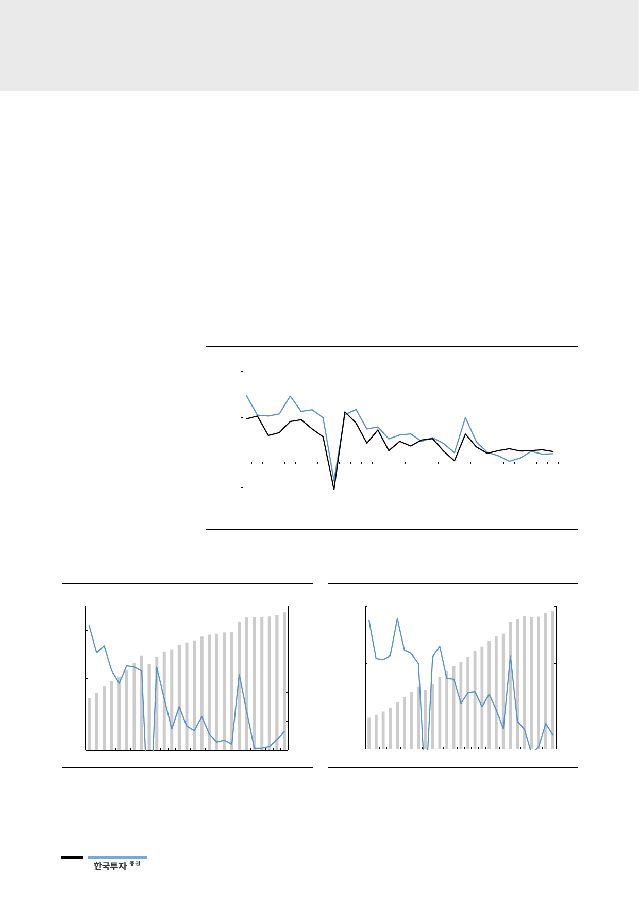

III. 원전 정상화로 풀어가는 불확실성
밋밋한 전력수요 증가세
1. 전력 거래가격, 유가와 발전믹스가 중요
2010년대 이후 우리나라의 전력수요는 GDP 성장률보다 낮은 폭으로 늘고 있다.
마지막 요금인상이 있었던 2013년 이후로 1인당 전력 소비량은 정체되어 있다.
그 결과 최근 전력수요는 과거 정부의 수급계획 전망을 하회해 왔다. 전력수요는
2000년대처럼 경제성장을 압도해 증가하기 어려울 전망이다. 8차 전력수급계획
에서 전망하는 향후 15년간 전력소비량의 연평균 증가율은 1.0%로 7차의 2.1%
대비 크게 낮아졌다. 이에 따라 정책기조는 전력설비 확장보다 효율적인 수요관
리에 더 중점을 두고 있다.
[그림 37] 최근 전력소비 증가율은 GDP 성장률을 넘지 못하고 정체
(% YoY)
20
15
전력소비량 증가율
10
5
0
(5)
실질 GDP 성장률
(10)
90 92 94 96 98 00 02 04 06 08 10 12 14 16 18F
자료: 한국은행, 한국전력거래소, 한국투자증권
[그림 38] 인구당 1차 에너지 소비량은 정체
(toe)
6
(% YoY)
15
5
12
4
증가율(우)
9
3
6
2
1
3
1인당 에너지 소비량(좌)
0
0
90 92 94 96 98 00 02 04 06 08 10 12 14 16
자료: 산업통상자원부, 한국투자증권
[그림 39] 과거와 같은 전력소비 증가 기대하기 어려움
(kWh)
10,000
(% YoY)
15
8,000
6,000
12
증가율(우)
9
4,000
6
2,000
3
1인당 전력소비량(좌)
0
0
90 92 94 96 98 00 02 04 06 08 10 12 14 16
자료: 산업통상자원부, 한국전력거래소, 한국투자증권
20